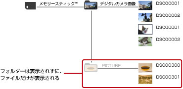
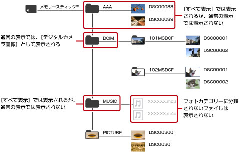

XMB™の基本操作 > コンテンツの表示方法を切りかえる
コンテンツの表示方法を切りかえる
記録メディアやUSBマスストレージ機器では、主に、記録メディアの直下にある次のフォルダーに保存されたコンテンツを表示します。
| カテゴリー | フォルダー名 | |
|---|---|---|
 |
（ビデオ） | VIDEO |
 |
（ミュージック） | MUSIC |
 |
（フォト） |
|
| * |
デジタルカメラで撮影したときに、DCFフォーマットで記録された画像が保存されるフォルダーです。 |
|---|
記録メディアやUSBマスストレージ機器のアイコンを選んで ボタンを押し、オプションメニューで［すべて表示］を選ぶと、上記以外のフォルダーも表示することができます。
ボタンを押し、オプションメニューで［すべて表示］を選ぶと、上記以外のフォルダーも表示することができます。
通常の表示の例
（フォト）でメモリースティック™を選んだとき

すべて表示の例
（フォト）でメモリースティック™を選んだとき

ヒント
- ［すべて表示］では、記録メディアに保存されたフォルダーすべてとPS3™で再生可能なファイルを表示します。
- CD-Rなどのデータディスクを再生したときは、はじめからすべてのフォルダーを表示します。
- お使いのPS3™によっては、記録メディアを使うときに別売りのUSBアダプターなどが必要になる場合があります。